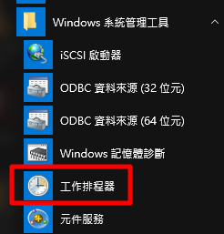

我的網路筆記第一集IP
一、IP 位址的組成與分級
IP 的組成是 32 bits 的數值，也就是由 32 個 0 與 1 組成的一連串數字，不過因為人類對於二進位實在是不怎麼熟悉，所以為了順應人們對於十進位的依賴性，因此就將 32 bits 的 IP 分成四小段，每段含有 8 個 bits ，將 8 個 bits 計算成為十進位，並且每一段中間以小數點隔開，那就成了目前大家所熟悉的 IP 的書寫模樣了。如下所示：
1 | IP 的表示式： |
所以 IP 最小可以由 0.0.0.0 一直到 255.255.255.255，但在這一串數字中，其實還可以分為兩個部分，主要分為 Net_ID ( 網域號碼 )與 Host_ID ( 主機號碼 ) 兩部份，我們先以 192.168.0.0 ~ 192.168.0.255 這個 Class C 的網域當作例子來說明好了
在下面的範例當中，前面三組數字 ( 192.168.0 ) 就是網域號碼，最後面一組數字則稱為主機號碼
1 | 192.168.0.0~192.168.0.255 這個 Class C 的說明： |
PS：上面例子當中的 192.168.0.0, 192.168.0.1, 192.168.0.2, …., 192.168.0.255 (共 256 個) 這些 IP 就是同一個網域內的 IP 群( 同一個網域也稱為同一個網段 )，請注意，同一個 Net_ID 內，不能具有相同的 Host_ID ，否則就會發生 IP 衝突，可能會造成兩部主機都沒有辦法使用網路的問題
舉例：電話號碼台中區 ( 04 )、台北 ( 02 ) 代表網路邊號，家裡電話號碼123456代表主機邊號台中電話 04-123456 你不能保證在其它區號比如台北 02 裡面沒有 1234567 這個號碼而若台中使用了區號 04 的話，台北就不能使用04而必須改用其它 ( 02 ) 所以整個區號加電話號碼必須是唯一的
Net_ID 與 Host_ID 的限制：
在同一個網段內，Net_ID 是不變的，而 Host_ID 則是不可重複，此外，Host_ID 在二進位的表示法當中，不可同時為 0 也不可同時為 1，因為全為 0 表示整個網段的位址 ( Network IP )，而全為 1 則表示為廣播的位址 ( Broadcast IP )，例如上面的例子當中，192.168.0.0 ( Host_ID 全部為 0 ) 以及 192.168.0.255 ( Host_ID 全部為 1 ) 不可用來作為網段內主機的 IP 設定，也就是說，這個網段內可用來設定主機的 IP 是由 192.168.0.1 到 192.168.0.254，所以在算主機編號時，要扣掉 2 ( 網路本身識別碼和廣播位址 )
IP 的分級：
為了 IP 管理與發放註冊的方便性，InterNIC 將整個 IP 網段分為五種等級， 每種等級的範圍主要與 IP 那 32 bits 數值的前面幾個位元有關，基本定義如下：
1 | 以二進位說明 Network 第一個數字的定義： |
二、IP 的種類
Public IP : 公共 IP ( 外網 )，經由 INTERNIC 所統一規劃的 IP，有這種 IP 才可以連上 Internet
組建一個企業級網路，需要去向電信運營商 ISP 申請一個接入 Internet 的寬頻，同時 ISP 還會給我們分配一個或多個 IP 地址，這些 IP 地址可以供我們企業內部上網，這些 ISP 分配給我們的 IP，就是公共 IP
要將網路連上 Intetnet 的時候，必須先註冊好網路編號 ( Net ID )，如果該 ID 已經被使用了，就必須選用另外的 ID 了，負責 Internet IP 註冊的機構叫做 InterNIC ( Network Information Center )，他們的網路位址是 http://www.internic.net ，他們將 IP 地址分配給註冊並向Internet NIC 提出申請的組織機構，通過它直接訪問網際網路，不過實際上的運作，一般機構或個人是不太可能直接從 InterNIC 上註冊 IP 的，而是經 ISP 分配下來，這些經過合法授權使用的 IP，稱之為公共 IP ( Public IP )
Private IP : 私有 IP 或保留 IP ( 內網 )，不能直接連上 Internet 的 IP，主要用於區域網路內的主機連線規劃
早在 IPv4 規劃的時候就擔心 IP 會有不足的情況，而且為了應付某些企業內部的網路設定，於是就有了私有 IP (Private IP) 的產生了。私有 IP 也分別在 A, B, C 三個 Class 當中各保留一段作為私有 IP 網段，那就是：
1 | Class A：10.0.0.0 - 10.255.255.255 |
特殊的 loopback IP 網段：
Class A 的網域 lo， lo 的網路是當初被用來作為測試作業系統內部迴圈所用的一個網域，同時也能夠提供給系統內部原本就需要使用網路介面的服務 ( daemon ) 所使用
如果你沒有安裝網路卡在的機器上面，但是你又希望可以測試一下在你的機器上面設定的伺服器環境到底可不可以順利運作，這個時候就是利用這個所謂的內部迴圈網路，這個網段在 127.0.0.0/8 這個 Class A，而且預設的主機 ( localhost ) 的 IP 是 127.0.0.1 所以當你啟動了你的 WWW 伺服器，然後在你的主機的 X-Window 上面執行 http://localhost 就可以直接看到你的主頁，所以在算網路編號時，要扣掉 127
三、Netmask、Subnet mask ( 子網路遮罩 )
Netmask：
假設我們設定一個區網，使用的是 Class A ，那麼我們很容易就會想到，有這麼多電腦設定在同一個 Class A 的區段內 ( 256x256x256-2=16777214 )，一千多萬台的廣播，你的網路還能使用嗎，所以我們必須切網段，而切完的網段我們就稱為子網路 ( Netmask )，那如何切網段，就是讓第一個 Host_ID 被拿來作為 Net_ID ，以 Class C 為例網域號碼佔了 24 位元，要將這樣的網域切的更細，所以 Net_ID 就有 25 bits，至於 Host_ID 則減少為 7 bits，在這樣的情況下，原來的一個 Class C 的網域就可以被切分為兩個子網域，而每個子網域就有『 256/2 - 2 = 126 』個可用的 IP 了
Subnet mask ( 子網路遮罩 )：
那到底是什麼參數來達成子網路的切分呢？那就是 Netmask ( 子網路遮罩 )，以 192.168.0.0 ~ 192.168.0.255 這個網域為範例好了，如下所示，這個 IP 網段可以分為 Net_ID 與 Host_ID，既然 Net_ID 是不可變的，那就假設他所佔據的 bits 已經被用光了 (全部為 1)，而 Host_ID 是可變的，就將他想成是保留著 (全部為 0)，所以， Netmask 的表示就成為：
1 | 192.168.0.0~192.168.0.255 這個 C Class 的 Netmask 說明 |
轉成十進位的話，A, B, C Class 的 Netmask 表示就成為這樣：
1 | Class A, B, C 三個等級的 Netmask 表示方式： |
所以說， 192.168.0.0 ~ 192.168.0.255 這個 Class C 的網域中，他的 Netmask 就是 255.255.255.0 再來剛剛提到了當 Host_ID 全部為 0 以及全部為 1 的時後該 IP 是不可以使用的，因為 Host_ID 全部為 0 的時後，表示 IP 是該網段的 Network ，至於全部為 1 的時後就表示該網段最後一個 IP，也稱為 Broadcast ( 廣播位址 )，所以說，在 192.168.0.0 ~ 192.168.0.255 這個 IP 網段裡面的相關網路參數就有：
1 | Netmask: 255.255.255.0 <==網域定義中，最重要的參數 |
子網路切分：
以 192.168.0.0 ~192.168.0.255 這個情況為例，要分為兩個子網域以 Host_ID 拿來當作 Net_ID，那麼 Net_ID 使用了 25 bits 時，就會如下所示：
1 | 原本的 C Class 的 Net_ID 與 Host_ID 的分別 |
簡易算法：
/24，24個 1＝ 11111111.11111111.11111111.00000000 所以是 255.255.252.0
/22，25個 1＝ 11111111.11111111.11111111.10000000 所以是 255.255.252.128
/24 11111111.11111111.11111111.00000000 所以是 0~255
/25 11111111.11111111.11111111.10000000 25 個 1，切法是 11111111 從第一個 1 二進位開始算所以是 2段.4段.8段.16段.32段.64段.128段，所以 /25 就是 2 段子網路 第一段：255.255.255.0~255.255.255.127、第二段：255.255.255.128~255.255.255.255，已 class c 來看就是 第一段 192.168.1.0~192.168.1.127、第二段 192.168.1.128~192.168.1.255、/26 0~63、64~127、128~191、192~255 依此類推
1 | 對IP劃分子網後的子網路遮罩 |
ex：在一個 Lan 的環境下有兩台server，A Server IP 為 192.168.1.92 B Server IP 為 192.168.1.122 現在進行網段 Vlan 切割試問 submask “最小” 需為多少, 兩台 server 會在同一個網段內?
1 | 看2組IP可以確定是 class c |
git指令
使用工作排程器執行批次檔
隨著管理機器越來越多，自動化維運勢在必行也開始導入 ansible、slatstack 等自動化工具，為了配合自動化一些批次檔高手也會寫些批次檔輔助，本文章將介紹如何使用工作排程器執行批次檔
本文章使用 windows 10
1. 開始 → windows 系統管理工具 → 工作排程器

第二種方法：控制台 → 系統管理工具 → 工作排程器

2. 左邊列表點選工作排程器程式庫，再點選右邊的建立基本工作

3. 輸入這個排程的名稱跟描述

4. 觸發程序，選取執行時間本文章使要在呼叫時才使用，所以選擇僅一次

5. 選擇僅一次後會有開始時間，因為要在呼叫時開啟所以直接下一步

如果是有選擇有時間規律觸發，會有時間讓你選擇多久執行一次

6. 動作，選擇程序要執行的動作，本文章選擇啟動程式

7. 啟動程式，可以直接輸入指令如圖 shutdown ( 指 shutdown.exe 程式 )，並輸入引數「/s /t 10」，表示要自動關機並停等10秒

本文章已經做好批次檔，所以選擇瀏覽使用做好的批次檔


8. 最後查看有沒有設定錯誤，沒有點選完成

9. 回到排程畫面，會看到排程已列入點擊2下可以再做設定，本文章把此排程設定最高權限執行


10. 使用 cmd 啟動排程，看到成功就是 ok 了
1 | schtasks /Run /TN "排程名稱" |

如果不知道指令如圖 schtasks /? 可以查詢


配置winrm與https證書訊息
1 | #Requires -Version 3.0 |
安裝ansible-windows
本章將介紹使用 ubuntu-ansible 連線控制 windows，但是 windows 是沒有 ssh 連線的，所以會需要用到 pywinrm
1. 安裝 ansible
1 | 將 PPA 添加到系統中，中間需要案 Enter 接受 PPA 增加 |
1 | 更新並安裝 |
2. 安裝 pywinrm
1 | 安裝 pywinrm 模組 |
3. 配置 ansible
Ansible 通過 hosts 文件知道所有服務器，我們需要先設置此文件，然後才能開始與我們的其他機器連線
1 | host 文件路徑 |
4. 新增群組資料夾，windows 連線會需要輸入遠端帳密，因此我們在 ansible 下建立 group_vars 輸入遠端需要設定
PS.檔案名稱要跟群組一樣，才會讀取到 YMAL 檔的內容
1 | sudo mkdir /etc/ansible/group_vars |
5. 製作 powershell 腳本，本文章是使用 windows server 2016 Datacenter
桌面右鍵 → 新增 → 文件資料夾

隨意資料夾右上箭頭 → 點選分頁檢視 → 副檔名打勾，這樣就看的到檔案副檔名


命名 ConfigureRemotingForAnsible.ps1 貼上網址內容，檔案內容：https://goo.gl/t5BWTN
貼上內容後更改檔名 .ps1

6. windows 開啟 powershell 設定，本文章是使用 windows server 2016 Datacenter 不用下列步驟可以跳第 7 步驟
開啟 powershell，左下搜尋 → 輸入 powershell → 右鍵以系統管理員身分執行

1 | 安裝 .NET Framework 4.5 |
1 | 更改 powershell 策略為 remotesigned 輸入 y 確認 |
1 | 查看版本（ 須為3.0以上 ） |
1 | 開啟 Winrm service |
7. 對 winrm service 進行基礎配置
1 | winrm quickconfig |

1 | winrm service 配置 auth |
1 | winrm service 配置加密方式為允許非加密 |
1 | 在放置 ConfigureRemotingForAnsible.ps1 路徑下執行配置 winrm 與 https 證書訊息 |
1 | 檢查 config 內容 |
8. 測試，如下圖就成功了接下來可以下其他指令對機器做控制
1 | ansible all -m win_ping |
9. 下指令方式操作機器
1 | ansible name -m win_command -a "command" |
安裝ansible-ubuntu
想要用 ansible 控制另外一台 ubuntu 機器很簡單，只要安裝好 ansible 設定好 host，並且 SSH 可以連線要被控制的 ubuntu 機器就可以了
1. 安裝 ansible
1 | 將 PPA 添加到系統中，中間需要案 Enter 接受 PPA 增加 |
1 | 更新並安裝 |
2. 配置 ansible
Ansible 通過 hosts 文件知道所有服務器，我們需要先設置此文件，然後才能開始與我們的其他機器連線
1 | host 文件路徑 |
3. 測試，如下圖就成功了接下來可以下其他指令對機器做控制
1 | ansible -m ping all |
4. 下指令方式操作機器
1 | ansible name -m command -a "command" |
如下圖下完重啟指令後會發現連不到，因為重新啟動會暫時連不到表示指令操作成功
安裝slatstack-第一種架構
什麼是 saltstack？
SaltStack 是一種新的基礎設施管理方法開發軟件，簡單易部署，可伸縮的足以管理成千上萬的服務器，和足夠快的速度控制。SaltStack 提供了一個動態基礎設施通信總線用於編排,遠程執行、配置管理等等。
saltstack 有三種架構，本文章先介紹第一種架構 master → minion 這種架構中 master 和所有 minion 都直接連接，minion 接收來自 master 的指令，完成命令執行或配置管理，如下圖所示
一、安裝 saltstack master ubuntu 16.04
更新
1 | apt-get update |
安裝
1 | apt-get -y install salt-master |
二、安裝 saltstack minion ubuntu 16.04
安裝
1 | apt-get -y install salt-minion |
配置 config
1 | cd /etc/salt ( 進入 config 位置 ) |
設定：輸入 master IP 讓 master 找的到 minion
設定：minion ID
重啟服務
1 | service salt-minion restart |
查看服務是否重啟成功
1 | service salt-minion status |
三、saltstack master 接受 saltstack minion 金鑰
輸入指令檢查 minion 金鑰，還未加入金鑰會顯示紅色，名稱為 config 設定的 ID
1 | salt-key -L ( L 一定要大寫 ) |
PS.下圖是沒有接收到任何金鑰畫面
加入 minion 金鑰 ( 二種加入指令 )
1.全部加入：只要在列表內都會加入金鑰
1 | salt-key -A ( A 一定要大寫 ) |
檢查加入成功金鑰會顯示綠色
1 | salt-key -L |
2.單個加入：指定特定機器 name 單獨加入金鑰
1 | salt-key -a name ( a 一定要小寫 ) |
檢查加入成功金鑰會顯示綠色
1 | salt-key -L |

3.刪除金鑰
1 | salt-key -d name ( d 一定要小寫 ) |
ps.刪除後列表金鑰就會不見，需要到 minion 重啟服務才能再重新加入，更改 ID 也需要重啟服務名稱才會改變
四、安裝 saltstack minion windows
下載安裝包：https://docs.saltstack.com/en/latest/topics/installation/windows.html
開始安裝
設定 IP 和 ID
安裝好後如果想更改 IP 或是 ID 可已到路徑 C:/salt/conf 的 minion 更改
做更改一樣要重啟服務，搜尋 → services.msc
五、測試
輸入指令測試 ping minion
1 | salt '*' test.ping ( * 是全部 ) |
ping 全部
ping 單獨
也可以做成腳本
1 | vim test ( 創一個隨意文件 ) |
腳本內容第一行 #!/bin/bash 必要，接下來為操控指令可以隨意更換，ex：salt ‘test’ cmd.run ‘shutdown -r -t 0’ 此為 windows 重啟指令，可直接下或做成腳本
加權限

執行測試

到這邊就完成了
VXG建立
VXG 是跟 wowza 一樣的流媒體服務器，本文章將介紹如何建立起來
VXG streaming server 下載方式
進入官網：https://www.videoexpertsgroup.com/
點擊右上角 FREE TRIAL 輸入 email 申請免費30天帳號
輸入完 email 後會收到信件，進入 email 點擊 Confirm Email Address 會開啟分頁設定自己的密碼
輸入完密碼會回到登入頁面也，輸入信箱跟剛剛設定的密碼登入
到了登入頁面點擊左邊列表 Downloads，選擇 VXG Streaming Server 下載
接下來把下載檔放到機器解壓縮，本文章使用的是 ubuntu 16.04
更新
1 | sudo apt-get update |
容器安裝
1 | sudo apt-get -y install docker.io |
zip 解壓縮安裝
1 | sudo apt-get -y install unzip |
將下載檔案解壓縮
1 | sudo unzip VXG.Server-1.3.161_181218.zip |
進入解壓縮資料夾
1 | cd 20181218 |
設置 docker images
1 | sudo ./setup.sh |
啟動服務
參數介紹：
-r：使用本地存儲運行 VXG Server 以獲取記錄。
-h：SERVER_HOST：在早期版本的 VXG Server上運行兼容模式。
-c：CERTIFICATE_PATH：繼續使用 HTTPS 證書。
1 | sudo ./start.sh -r -h SERVER_HOST -c CERTIFICATE_PATH |
下圖是成功畫面
PS：停止 VXG 服務器指令
1 | ./stop.sh |
開啟瀏覽器直接輸入安裝 VXG 機器外網 IP 登入，默認登錄帳號密碼：admin / admin
首次啟動需要許可證密要，會需要再度登入官網
點擊左列 License 複製 UUID
接下來來到 VXG 官網登入
點擊左列 License & Plans，如下圖點擊 SET 把剛剛複製的 UUID 貼上去
貼上去後會給你一組 Key 複製下來
再回到 VXG 網頁，把複製的 Key 貼上，接下來就可以正常操作了
基本操作：
點擊左列 Server Admin → 點擊 ADD NEW CHANNEL
選擇想要的流方式，本文章是使用 ip camer
輸入參數
輸完參數會有測試網頁讓你測試，點擊網址開啟分頁觀看
點擊齒輪圖案可以設定想要觀看格式
往下拉會出現 QR code 給手機使用的，手機必須下載 VXG StreamLand 才能用
點擊完成後會出現下圖畫面，紅框地方編輯跟刪除
到這邊安裝介紹跟基本操作就結束了！
設定wowza-HLS低延遲
本文章將介紹如何調整 HLS 低延遲
1. 首先在 Applications 選擇想設定低延遲的 Live Applications 點擊 Edit
2. 選擇 Low-latency stream ( ideal for chat applications )
3. 設定好後點選 Save 需要重新整理
4. 也可以再建立 Live Applications 的時候先設定好
5. 設定好 Low-latency stream 點選上面分頁 Properties
6. Quick Links 選擇 Cupertino Streaming Packetizer
7. 點選 Edit 後開始設定裡面參數 cupertinoChunkDurationTarget 設定 1000 ( 1000毫秒等於1秒 )、cupertinoMaxChunkCount 設定 50、cupertinoPlaylistChunkCount 設定 12
8. 設定好後一樣要重新整理
9. 設定好後回到 Quick Links 選擇 Custom
10. 點選 Edit 點選 Add Custom Property 後開始設定參數
11. 參數為 Path：/Root/Application/LiveStreamPacketizer、Name：cupertinoMinPlaylistChunkCount、Type：Integer、Value：6
12. 設定好後一樣要重新整理